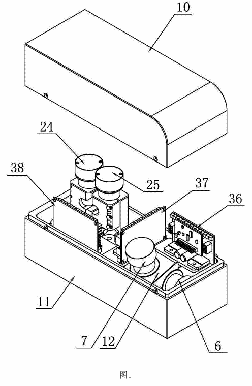
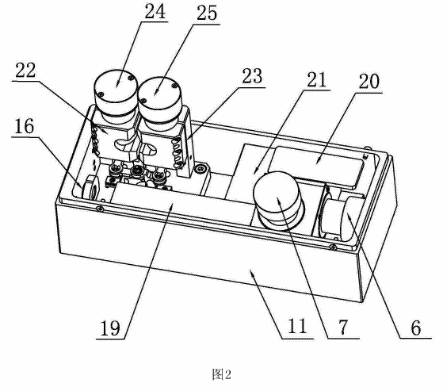
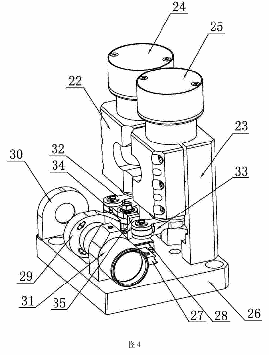

R004CN205899130U 高速动态聚焦激光振镜模组（深圳思特 / 大族思特）



- 两件式壳体 + 内支架装 X/Y 振镜，壳体侧壁装保护窗镜片；没有场镜，是前聚焦
- Z 模块：Z 轴底座上装直线导轨 + 滑座（变焦透镜）+ 遮光座 + 聚焦透镜筒；两台电机竖装 + 连杆推滑座（响应 < 0.2 ms）
- 驱动板装在壳体里，电机用电机夹包裹固定
和我们比整体思路和我们一样（前聚焦、Z 轴底座保同轴、内支架、侧壁保护窗）。区别：它用双电机连杆追求高速打标；我们 50 m 焦深大，用丝杠步进求“准”